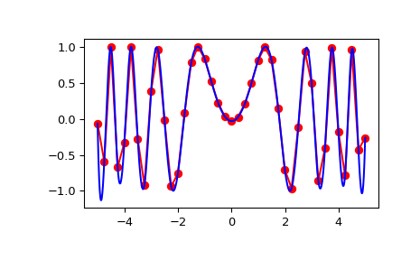

scipy.interpolate.interp2d¶
-
class
scipy.interpolate.interp2d(x, y, z, kind='linear', copy=True, bounds_error=False, fill_value=None)[source]¶ Interpolate over a 2-D grid.
x, y and z are arrays of values used to approximate some function f:
z = f(x, y). This class returns a function whose call method uses spline interpolation to find the value of new points.If x and y represent a regular grid, consider using RectBivariateSpline.
Note that calling
interp2dwith NaNs present in input values results in undefined behaviour.- Parameters
- x, yarray_like
Arrays defining the data point coordinates.
If the points lie on a regular grid, x can specify the column coordinates and y the row coordinates, for example:
>>> x = [0,1,2]; y = [0,3]; z = [[1,2,3], [4,5,6]]
Otherwise, x and y must specify the full coordinates for each point, for example:
>>> x = [0,1,2,0,1,2]; y = [0,0,0,3,3,3]; z = [1,2,3,4,5,6]
If x and y are multidimensional, they are flattened before use.
- zarray_like
The values of the function to interpolate at the data points. If z is a multidimensional array, it is flattened before use. The length of a flattened z array is either len(x)*len(y) if x and y specify the column and row coordinates or
len(z) == len(x) == len(y)if x and y specify coordinates for each point.- kind{‘linear’, ‘cubic’, ‘quintic’}, optional
The kind of spline interpolation to use. Default is ‘linear’.
- copybool, optional
If True, the class makes internal copies of x, y and z. If False, references may be used. The default is to copy.
- bounds_errorbool, optional
If True, when interpolated values are requested outside of the domain of the input data (x,y), a ValueError is raised. If False, then fill_value is used.
- fill_valuenumber, optional
If provided, the value to use for points outside of the interpolation domain. If omitted (None), values outside the domain are extrapolated via nearest-neighbor extrapolation.
See also
RectBivariateSplineMuch faster 2-D interpolation if your input data is on a grid
bisplrep,bisplevSpline interpolation based on FITPACK
BivariateSplinea more recent wrapper of the FITPACK routines
interp1d1-D version of this function
Notes
The minimum number of data points required along the interpolation axis is
(k+1)**2, with k=1 for linear, k=3 for cubic and k=5 for quintic interpolation.The interpolator is constructed by
bisplrep, with a smoothing factor of 0. If more control over smoothing is needed,bisplrepshould be used directly.Examples
Construct a 2-D grid and interpolate on it:
>>> from scipy import interpolate >>> x = np.arange(-5.01, 5.01, 0.25) >>> y = np.arange(-5.01, 5.01, 0.25) >>> xx, yy = np.meshgrid(x, y) >>> z = np.sin(xx**2+yy**2) >>> f = interpolate.interp2d(x, y, z, kind='cubic')
Now use the obtained interpolation function and plot the result:
>>> import matplotlib.pyplot as plt >>> xnew = np.arange(-5.01, 5.01, 1e-2) >>> ynew = np.arange(-5.01, 5.01, 1e-2) >>> znew = f(xnew, ynew) >>> plt.plot(x, z[0, :], 'ro-', xnew, znew[0, :], 'b-') >>> plt.show()
Methods
__call__(x, y[, dx, dy, assume_sorted])Interpolate the function.